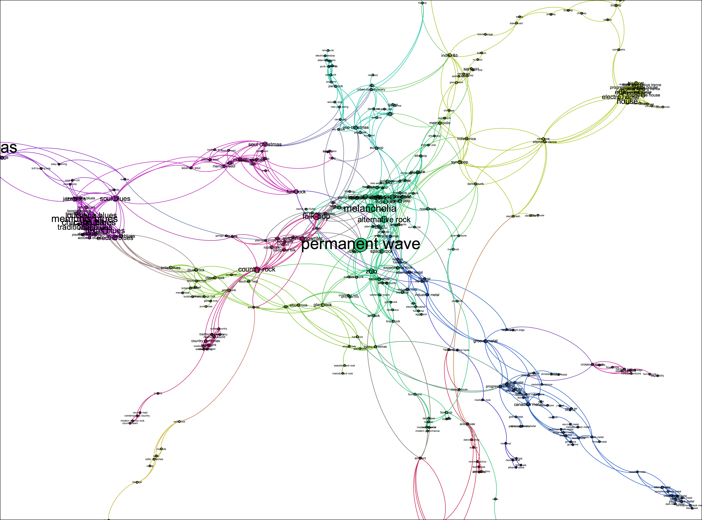
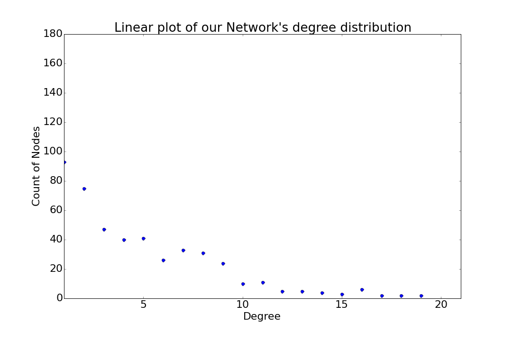
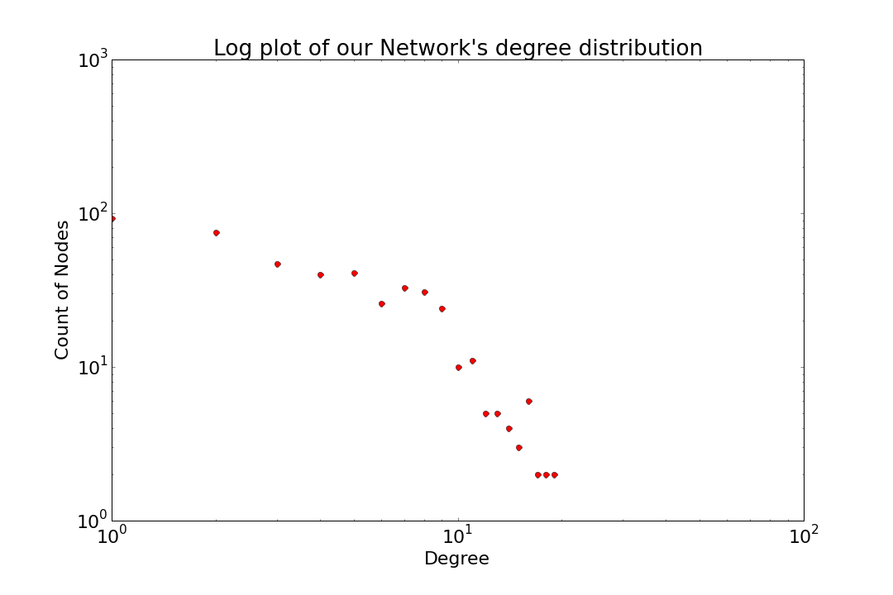

Spotify contains more than 1000 genres. We were really interested on how these genres are interconnected between them and if they form communities. As a result, we decided to make a Network that consists of these Genres. Every node of the network is a genre and two genres are connected with an edge if and only if they have more than 20% of artists in common.
A static Image of a part of our Graph looks like this:

If you want a dynamic and interactive overview of the graph, click here.
We will proceed to the Analysis of our Network
Let's explore degree distributions
The maximum degree in our network is 21. This means that the most connected genre has 21 connections/edges to other genres.
Let's take a look at our Network's Degree Distributions:


Who are the most interconnected genres? Let's find out by calculating the top 10 highest degree nodes:
The top 10 genres by degree are:
jazz christmas
permanent wave
melancholia
memphis blues
chicago blues
blues
alternative rock
louisiana blues
house
traditional blues
We can see so many blues sub-genres in there. If one pays attention to the graph too, can really see that blues are a small but tightly connected cluster. That leads us to the conclusion that blues is divided to some small subgenres which in reality are very strongly connected, containing a lot of the same artists. Jazz Christmas and Permanent Wave are also some of the most highly connected Genres that act as Hubs in our Network.
Let's explore the Centralities in our Netwrok
Betweeness Centrality The top 5 genres on Spotify by betweenness centrality:
indie r & b
pop rap
glam rock
permanent wave
synthpop
The betweenness centrality shows that these genres can always be found on the paths that lead to other genres. They act as "bridges".
Eigenvector Centrality The top 5 genres on Spotify by eigenvector centrality:
memphis blues
chicago blues
blues
traditional blues
louisiana blues
Eigenvector centrality is a measure of the influence of a node in a network. It is based on the concept that connections to high-degree nodes contribute more to the score of the node in question than equal connections to low-scoring nodes. Hence, 5 most central genres according to eigenvector centrality are the ones connected to most high scoring genres. As we can see these are all blues genres, which leads us to the conclusion that this small community consists of many high degree nodes that are interconnected to each other.
Let's investigate the Assortativity of our Netwrok
Assortativity is a preference for a network's nodes to attach to others that are similar in some way. We will investigate degree assortativity, thus investigate if high degree nodes (genres with many connections to other genres) have a preference to connect to other high degree nodes.
The assortativity degree coefficient of our network is 0.47. Since it is a positive number, and bigger enough than zero, it proves that our network is in fact assortative with respects to degree.
2. Evolution of Music Genres Through History
Musical genres have changed and evolved through the years. Genres that were popular in the past have faded out and other genres sprouted up and became influencial in the recent years. It is really interesting to track and oversee this path. We collected all the 1000 Spotify genres and combined them to 16 basic ones, based on Wikipedia's list of main genres.
Evolution of Music Genres based on Artists' Active Years
Let's look at how many artists exist and are active in every decade for every genre.
As we can see, Rock and Metal have evolved and grew up steadily from 1960 up to today, following a completery linear growth. This is probably due to the fact that most Rock Artists that started their career at the 60s-70s are still active until today, along with every other artist of the upcoming decades.
It is clear from the plot that Pop did not have that many artists (less than 2000) up until the 90s when it started growing up steadily, especially with the new millenia.
Electronic music as it is expected, was almost non-existent as a genre up to 1990. Then it started taking some shy steps to the music scene and booming after 2000. It managed to almost quadriple the number of active artists in the last 20 years.
Jazz is one of the smallest genres, counting less than 1500 artists in total. However, it shows a really steady progress, managing to retain the same number of active artists for more than 30 years (60-90) and shows a little more growth after 1990. Also, it seems to be having less artists in the last 10 years.
R&B and Soul shows a really interesting pattern. It was almost non-existen up to 1960s when it started growing steadily up to 1975. Then it became stable for a whole of 15 years and it seems that the '90s gave it a push to revive itself. It gained 500 new artists in less than a decade and what is most interesting is that after 2005 show a massive boom gaining another 500 artists in a few years.
Hip Hop and Rap is the perfect examples of modern Genres. It is evident that until 1990 this genre was almost non-existent. With the coming of the '90s though it grew suddenly and managed to quadriple the number of artists in the last 20 years. Furthermore, More than a 1000 new artists became active in just the last decade.
Blues, one of the small gernes with less than 700 artists in total started growing at the 60s and saw its peak at the 70s. After that milestone though, it has been steadily losing artists and despite some flunctuations during the 90s it has a downward trend.
Folk seems to have started to catch up after 1970 and grew slowly and steadily up to the 90s. After that though, its increase became more sharp, gaining 1000 artists in the last 20 years.
Easy Listening is a Genre that refers to less than 160 artists. Its pattern is interesting to analyse though. We spot a sharp increase at 1985 peaking at 1990 and then starting to fall downwards up until 2010 where it seems it saw some kind of revival.
Avantgarde counted around only 50 artists up to 1990 when it saw an increase in active artists. It started to grow steadily and despite a small fall at 2005 it peaked at its maximum after 2010.
Country musicians seem to steadily increase throughout the whole of the last half of the century. Furthermore, it seems that more and more are remaining active in the later decades, helping the genre grow steadily up to today, tottaling almost 1600 active artists.
Latin music has a steady growth from 1960 and onwards, reacing almost 1200 active artists today.
Independent African music started to develop after 1970 and remained generally stable for 30 years. From 2000 and onwards though, the active artists in the genre almost doubled during the last decade.
Carribean music shows an impressive steady growth. Managed to get from 200 artists at 1960 to 1000 active artists today.
Asian music started evolving after the 90s but the most interesting finding is the sharp growth it saw from 2010 until today.
Comedy music started to attract new artists after 1990 and saw a small but steady increase until today.
Comment:
Looking at how many years each Artists is Active tells us about the growth of the genre in general but does not tell us how the genre actually evolved with every decade change, since the artists that remain active for a lot of years appear and get counted in every following decade, thus increasing the number of artists in every decade. Thus, we will try to see what happens if we plot the number of artists in each decade based only on the artists that got actually created in this decade.
Evolution of Music Genres based on Artists' Starting Year.
Let's look how many artists started their carreer in every decade, for every genre.
As we can see, Rock started to grow up at 60s with more and more artists starting up at '65, even more than those in the famous '70s. From the '80s and onwards though Rock really spiraled up and continues to grow ap to 2000. It is also evident that after 2000 less and less new bands get created.
Pop really did not attract many artists up until the 90s where it saw its first big boom and grew sharply up to its peak at 2000.Also, we can see that the number of new artists from 2010 up to today is extremely low.
As it is ecpected, Artists that played Electronic music started to appear closing up to 1990. After that though, we see more and more artists in every decade, with the number of new artists to triple up in one decade
The Jazz plot is really interesting, especially in comparison to the one with active years where we could see that jazz was stable throughout. Looking at the above graph though, we can clearly see that this is not the case. We see that more and more artists played jazz during the 50s and 60s but there was a fall during 70s and 80s (when Rock started to become more popular) Though in the 90s was a sudden and sharp boom in the number of new artists, signaling a revival of the genre. Furthermore, after that, less and less new artists appeared and especially the last 10 years there are almost no new artists playing jazz. Comparing this graph to the one above, we can also conclude that Jazz artists remain active for a lot of years and thus the artists from the '70s and '90s are the ones responsible for the stable look at the years active graph.
R&B and Soul shows a really interesting pattern. Except from a spark at 1955, there was a flat and stable number of new artists in every decade but saw a big fall during 80-90. At the '90s though it started growing again with more and more artists appearing every year and especially at 2000 peaked with almost 70 new artists. It is undergoing a fall in the recent years though.
Hip Hop and Rap is the perfect examples of modern Genres. Up to 1985 there were almost no artists occupied with this genre. After that step though and especially after 1990 this genre attracted more and more artists. We can also see a downward trend in the recent years.
Blues, as one would expect, is one of the "old" genres. More artists appeared during the '50s and '60s and then saw a downward spiral up to today. Considering that the graph based on active years show a stable pattern, we can conclude that most of the artists that appeared during the '60s are still active today.
Folk saw a growth of new artis during '65-70 but then saw very few artists for the following 20 years. After '90s though folk music started to see more and more artists every decade seeing its maximum peak at 2000. In the recent years though it seems it does not attract new artists.
Easy Listening being maybe the smallest genre, shows big flunctuations. It is clear though that more artists appeared during 1950-60 and again at 1980-90.
Avantgarde really started to appear after 1985 and was at its peak with the most new artists appearing at 1995-2000. Some more new artists seem to have appeared recently after 2010.
Country shows a really interesting stability with approximately 20 artists appearing every 5 years up until 1990 (except a minor fall during 1975-80). During 1990 though this number doubled up to 40 new artists and kept being high up until 2010 when it saw a sharp fall.
Latin music saw a boom of new artists at 1960-1965 and then saw a fall with only 10 new artists appearing every 5 years.During 1990 though, it spiraled up again and amanged to remain stable for the next 15 years up to 2005, seeing almost 30 artists every 5 years. After that though, new artists are almost non-existent.
Africann artists seem to gather during the 70s and then some more appeared during 2000 but in between we see very few new artists appearing.
Carribean music shows a steady growth with 15 artists appearing every 5 years and doubled that number spiraling up to 30 after 1990.
As we saw in the years active, Asian music started evolving after the 90s and this is obvious with almost 25 new artists appearing during 1995.
Comedy music started to attract new artists during 1980-1990 but saw a fall after 2005.
Evolution of Music Genres Popularity
We looked at the number of artists in every decade and came to conclusions about the growth of every genre. But, how many times have you wondered how popular a genre is? And, how its popularity changed over the years? We will try to answer these questions by using the Popularity value of Spotify for every Artist. However, how does one define what popularity is? We will try two different approaches and analyze both results. Firstly, we will define the popularity of every decade as the sum of all Popularity values of all artists in that decade.
Let's look how popularity changed through decades for every genre.
Comment:
The above graphs give us a really good estimate of how popularity changed for every change during the change of time. But, it can also be misleading. Since the popularity was calculated as the total of all popularities, a decade which had a few but really popular artists would be shown the same way as a decade with a lot but not so popular artists. Since the popularity is subjective, some might actually argue that more artists are indeed a proof of a more popular genre. Nevertheless, in order to tackle all these questions, we calculated the popularities a second time, but this time we defined popularity as the average value of all the individual popularities in this decade.
Let's look once again how popularity changed through decades for every genre.
Artists Popularity
We saw how popularity changed over decades for every genre using different definitions and calculations. But, if you are as interested in music and as curious as us, you might be wondering who are/were the most popular artists for every genre? Don't worry, we have the answers for you!
Let's look who were the most popular artists in every genre.
The most popular artist in the 1950's is: Elvis Presley The most popular artist in the 1960's is: The Rolling Stones The most popular artist in the 1970's is: Queen The most popular artist in the 1980's is: Red Hot Chili Peppers The most popular artist in the 1990's is: Maroon 5 The most popular artist in the 2000's is: Fall Out Boy The most popular artist in the 2010's is: Fall Out Boy
The most popular artist in the 1950's is: Simon & Garfunkel The most popular artist in the 1960's is: Fleetwood Mac The most popular artist in the 1970's is: Madonna The most popular artist in the 1980's is: Dr. Dre The most popular artist in the 1990's is: Lil Wayne The most popular artist in the 2000's is: Drake The most popular artist in the 2010's is: One Direction
The most popular artist in the 1950's is: Philip Glass The most popular artist in the 1960's is: Barry White The most popular artist in the 1970's is: Grandmaster Melle Mel The most popular artist in the 1980's is: David Guetta The most popular artist in the 1990's is: Calvin Harris The most popular artist in the 2000's is: Avicii The most popular artist in the 2010's is: Disclosure
The most popular artist in the 1950's is: Nina Simone
The most popular artist in the 1960's is: Caetano Veloso
The most popular artist in the 1970's is: Harry Connick, Jr.
The most popular artist in the 1980's is: Miles Davis
The most popular artist in the 1990's is: Michael Bublé
The most popular artist in the 2000's is: Parov Stelar
The most popular artist in the 2010's is: Joris
The most popular artist in the 1950's is: Elvis Presley
The most popular artist in the 1960's is: Stevie Wonder
The most popular artist in the 1970's is: Babyface
The most popular artist in the 1980's is: R. Kelly
The most popular artist in the 1990's is: Usher
The most popular artist in the 2000's is: Drake
The most popular artist in the 2010's is: The Weeknd
The most popular artist in the 1950's is: Elvis Presley
The most popular artist in the 1960's is: Donna Summer
The most popular artist in the 1970's is: Kool Moe Dee
The most popular artist in the 1980's is: Dr. Dre
The most popular artist in the 1990's is: Lil Wayne
The most popular artist in the 2000's is: Drake
The most popular artist in the 2010's is: Bon Iver
The most popular artist in the 1950's is: Etta James
The most popular artist in the 1960's is: The Rolling Stones
The most popular artist in the 1970's is: The Animals
The most popular artist in the 1980's is: Lynyrd Skynyrd
The most popular artist in the 1990's is: Cream
The most popular artist in the 2000's is: Cream
The most popular artist in the 2010's is: The Black Crowes
The most popular artist in the 1950's is: Bob Dylan
The most popular artist in the 1960's is: Simon & Garfunkel
The most popular artist in the 1970's is: Paul Simon
The most popular artist in the 1980's is: Tracy Chapman
The most popular artist in the 1990's is: Ryan Adams
The most popular artist in the 2000's is: Mumford & Sons
The most popular artist in the 2010's is: Of Monsters and Men
The most popular artist in the 1950's is: Ray Conniff
The most popular artist in the 1960's is: Andrés Calamaro
The most popular artist in the 1970's is: Vicentico
The most popular artist in the 1980's is: Soda Stereo
The most popular artist in the 1990's is: Gustavo Cerati
The most popular artist in the 2000's is: Soda Stereo
The most popular artist in the 2010's is: Soda Stereo
The most popular artist in the 1950's is: Ornette Coleman
The most popular artist in the 1960's is: Los Olimareños
The most popular artist in the 1970's is: Daniel Johnston
The most popular artist in the 1980's is: Yo La Tengo
The most popular artist in the 1990's is: Modest Mouse
The most popular artist in the 2000's is: The Walkmen
The most popular artist in the 2010's is: Neutral Milk Hotel
The most popular artist in the 1950's is: Elvis Presley
The most popular artist in the 1960's is: Jimmy Buffett
The most popular artist in the 1970's is: Eagles
The most popular artist in the 1980's is: George Strait
The most popular artist in the 1990's is: Ryan Adams
The most popular artist in the 2000's is: Luke Bryan
The most popular artist in the 2010's is: Florida Georgia Line
The most popular artist in the 1950's is: Antônio Carlos Jobim
The most popular artist in the 1960's is: Vicente Fernandez
The most popular artist in the 1970's is: Joan Sebastian
The most popular artist in the 1980's is: Marc Anthony
The most popular artist in the 1990's is: Daddy Yankee
The most popular artist in the 2000's is: Banda Sinaloense MS de Sergio Lizárraga
The most popular artist in the 2010's is: Soda Stereo
The most popular artist in the 1950's is: Fela Kuti
The most popular artist in the 1960's is: Manu Dibango
The most popular artist in the 1970's is: Youssou N'Dour
The most popular artist in the 1980's is: - (No Artist for this decade found on Sporify database)
The most popular artist in the 1990's is: Nelson Freitas
The most popular artist in the 2000's is: Anselmo Ralph
The most popular artist in the 2010's is: Fuse Odg
The most popular artist in the 1950's is: Paco de Lucía
The most popular artist in the 1960's is: Jimmy Cliff
The most popular artist in the 1970's is: Gipsy Kings
The most popular artist in the 1980's is: Sublime
The most popular artist in the 1990's is: Nicky Jam
The most popular artist in the 2000's is: Farruko
The most popular artist in the 2010's is: Save Ferris
The most popular artist in the 1950's is: - (No Artist for this decade found on Sporify database)
The most popular artist in the 1960's is: 鄧麗君
The most popular artist in the 1970's is: 張國榮
The most popular artist in the 1980's is: A.R. Rahman
The most popular artist in the 1990's is: 陳奕迅
The most popular artist in the 2000's is: BIGBANG
The most popular artist in the 2010's is: EXO-K
The most popular artist in the 1950's is: - (No Artist for this decade found on Sporify database)
The most popular artist in the 1960's is: Monty Python
The most popular artist in the 1970's is: "Weird Al" Yankovic
The most popular artist in the 1980's is: Mitch Hedberg
The most popular artist in the 1990's is: Bill Burr
The most popular artist in the 2000's is: The Lonely Island
The most popular artist in the 2010's is: Monty Python
Comment:
It is nice to split music history into decades, but you are probabaly curious about overal stats. Who is the most popular artist of all in every genre? Click to know!
The most popular latin artist on Spotify is: Daddy Yankee
The most popular country artist on Spotify is: Luke Bryan
The most popular jazz artist on Spotify is: Michael Bublé
The most popular avantgarde artist on Spotify is: Modest Mouse
The most popular pop artist on Spotify is: Drake
The most popular easy listening artist on Spotify is: Soda Stereo
The most popular r & b and soul artist on Spotify is: Drake
The most popular rock and metal artist on Spotify is: Maroon 5
The most popular asian artist on Spotify is: BIGBANG
The most popular african artist on Spotify is: Fuse Odg
The most popular carribean artist on Spotify is: Nicky Jam
The most popular comedy artist on Spotify is: The Lonely Island
The most popular electronic artist on Spotify is: Avicii
The most popular blues artist on Spotify is: The Rolling Stones
The most popular folk artist on Spotify is: Mumford & Sons
The most popular hip hop and rap artist on Spotify is: Drake